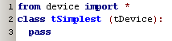

september 2007
JALsPy Devices Introduction
Introduction
A device is an object that can interact with the virtual environment of JALsPy. This interaction might be pure virtual, might of electrical nature, or any kind you can imagine. In the robot demo for example we use shapes that can interact in a mechanical nature with the robot.
Minimal requirements
When a new device at least obeys these minimal requirements, JALsPy will find the device and will use the device. The minimal requirements are:
So the simplest device might look like this:

and without doing anything else, the user can now create one or more instances of this device to be included in his project. The user can also edit the properties of this device. In a robot project this device might even serve as an obstacle.